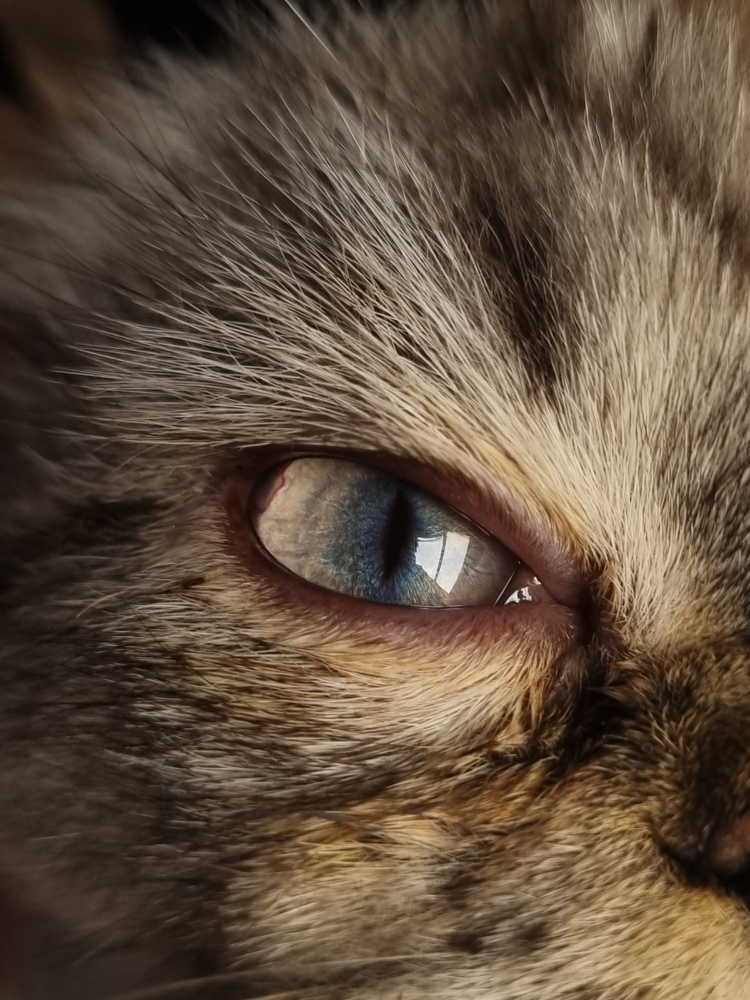
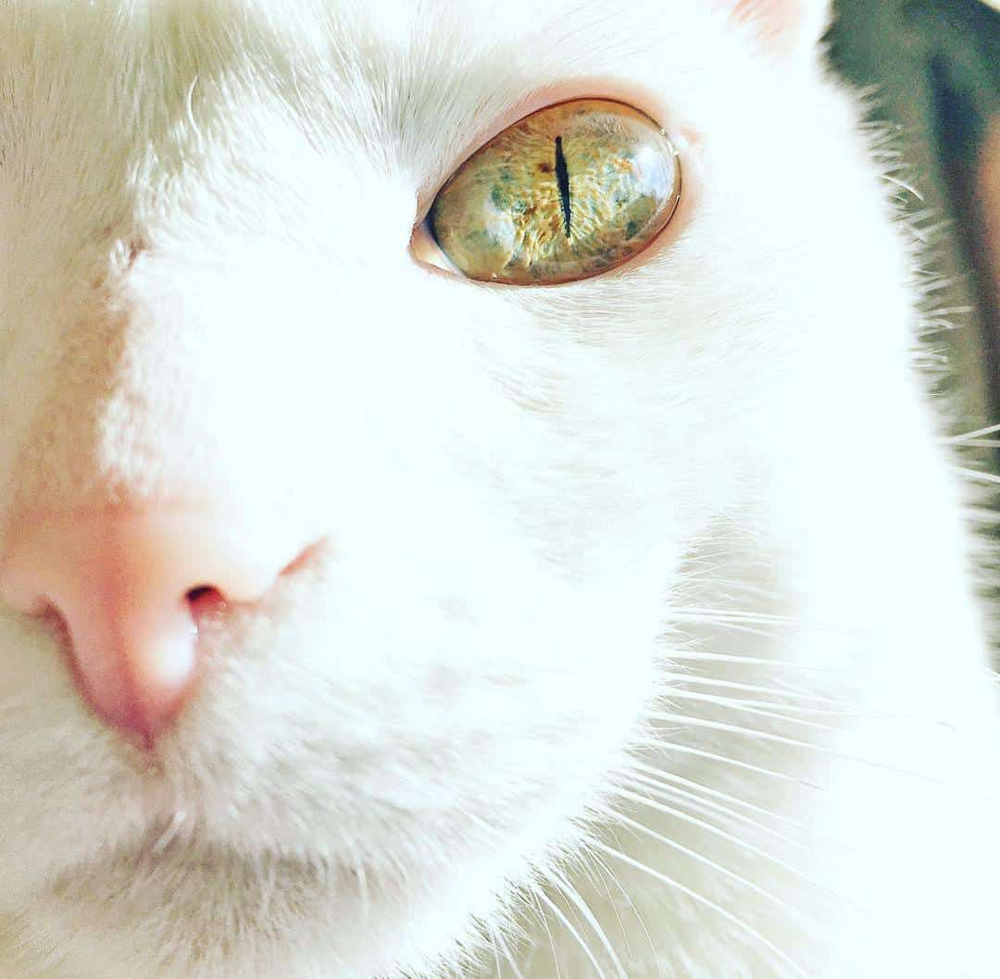
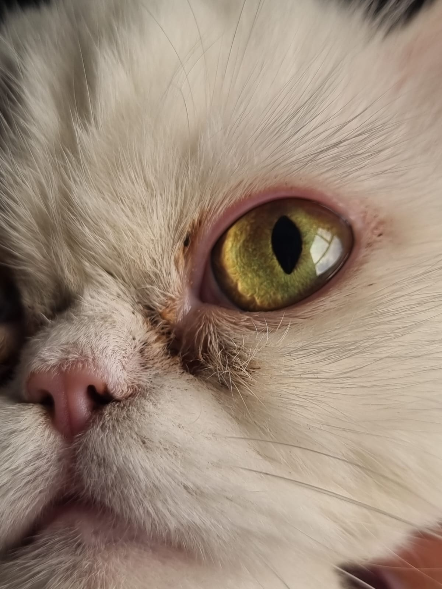
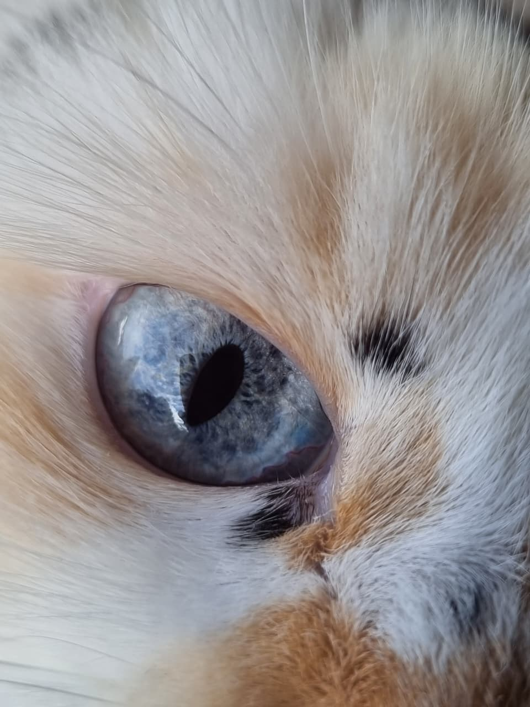
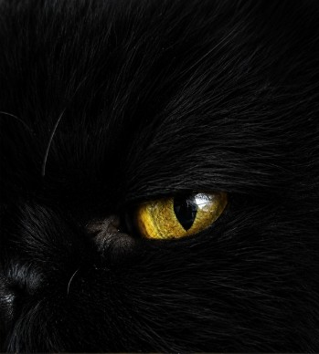
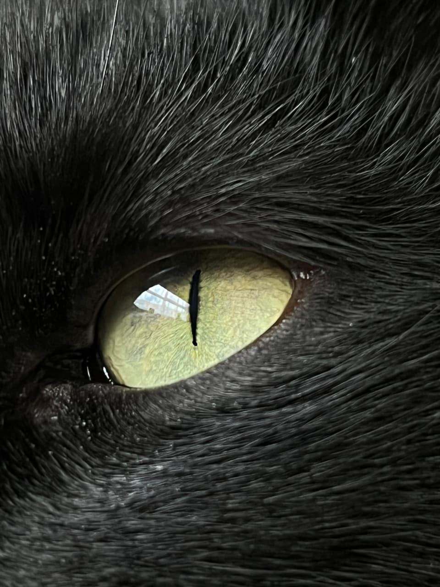

Universos ocultos en la mirada felina
“Pupilas cósmicas” nace de la forma en que percibo los ojos de los gatos. Al observar su mirada, siento que veo pequeños universos llenos de profundidad, color y misterio. A través de la fotografía y la inteligencia artificial, transformo los reflejos y colores de sus ojos en composiciones inspiradas en el universo.






Soy Andrés, estudiante de ingeniería catastral, con un interés constante en la creatividad y la exploración visual. Me gusta combinar el pensamiento técnico con una mirada estética.